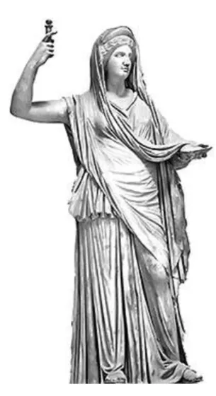

Entity Grimoire
 Hera
Hera
The Mistress
Origin: Greece
Preferred Vocations
- Queen
Domains & Sacred Objects
- Marriage
- Sceptre
Overview
Hera is the Queen of Greece, goddess of women and marriage. In classical Greek myth, she is Zeus' older sister whom he tricked into marriage by taking the form of her sacred bird, a cuckoo caught in a rainstorm. She pitied the little wet, bedraggled bird and held it close to her bosom, at which point the bird transformed back into Zeus.
Their marriage was initially very happy. Their honeymoon night lasted three hundred years: sex was that good. However, sexual fidelity was not in Zeus' vocabulary, and Hera is frequently portrayed as a bitter shrew pursuing Zeus' lovers and punishing them fiercely.
The Deeper Story
Mythologists and archaeologists suggest there's more to this story: Hera was one of the most significant pre-Olympian indigenous Greek goddesses. She is Greece's primordial sacred cow and Great Mother Goddess of matriarchal pre-Hellenic culture.
Original Nature
Hera was initially worshipped as:
- A Lady of the Beasts
- A goddess of abundance and fertility
- An oracular spirit
- A primordial snake goddess in Argos
In approximately 600 BCE, she made a major transformation. Emphasis was placed on her roles as wife and mother rather than her original functions.
Political Marriage
Dorian invaders married her to Zeus to confer legitimacy on his rule. Many myths emphasize her subjugation by Zeus. Much of what is portrayed as shrewish may be desperate attempts to retain her autonomy and power and to protect her own children's birthright as Zeus' multitudes of other children gained power.
The Rebellion
Hera, together with Poseidon (also an indigenous spirit incorporated into the Olympians), led an unsuccessful rebellion against Zeus. Zeus punished Hera by hanging her from the clouds with anvils tied to her feet. Depressed, Hera wrapped herself in deepest darkness and wandered Earth in the form of a frail, decrepit old woman. She always returns to Zeus.
The Wound: Hera was struck in the right breast by one of Heracles' arrows, inflicting a wound that never heals. She may be the precursor of the image of Our Lady of Sorrows, the beautiful, wounded Madonna.
Name & Renewal
Hera's name may be interpreted as "lady" or as the feminine form of "hero." Alternatively, her name is not Indo-European and has yet to be translated.
Hera seems to have first emerged as a primordial snake goddess in Argos. Each spring, she bathes in the sacred spring of Kanathos near Argos, emerging fresh and youthful like a snake with freshly shed skin. Hera is described as "renewing her virginity." This ritual may be in preparation for performing the Great Rite.
Powers & Invocations
- She is an oracular spirit
- She has the power to fulfill virtually any petition
- She can heal spousal and sexual abuse
- She punishes by striking those who displease her with sudden madness
- She may be invoked in cleansing rituals
Attributes & Correspondences
Favored People: Women in general; people born under the zodiac sign Cancer
Manifestation: A radiantly beautiful woman, shining like the sun; however she is also a shape-shifter with many forms. She notoriously disguises herself as a humble, old beggar woman but still expects to be treated like a queen. Woe to those who fail to treat even the humblest with respect. Hera has a fast temper and is quick to administer justice.
Iconography: Depicted wearing a diadem and veil
Attribute: Pomegranate
Colors: Yellow, gold
Birds: Cuckoo, dove, peacock, carrion-crow
Animals: Cow, snake, dragon, crab, snail, and other shelled creatures
Mount: Peacocks pull Hera's chariot
Plants: Vitex agnus-castus, lilies, poppies
Sacred Sites
- Her sanctuary at Argos (7th century BCE temple built over an earlier shrine), among the oldest Greek temples
- Her temple at Olympia was older than Zeus' and always distinct
- Ancient Greek altars were originally open to the air: Hera's temples may have been the first to be roofed
Offerings: Honey, flowers, incense, perfume, pomegranates
Related Entities
Amphitrite, Apollo, Artemis, Asteria, Callisto, Dakini, Dione, Dionysus, Dioscuri, Europa, Ezili Freda Dahomey, Ganymede, Hebe, Hekate, Helen of Troy, Hephaestus, Heracles, Hermes, Hesperides, Horai, Hybla, Hydra, Io, Iris, Kedalion, Ladon, Lady of the Beasts, Leto, Maia, Olympian Spirits, Poseidon, Prometheus, Scylla, Semele, Siren, Themis, Typhon, Zeus
Juno Caprotina: The Horned Manifestation
Among the many paths or manifestations of Hera in her Roman form as Juno is Juno Caprotina. This aspect represents a specific connection to goats and the protection of enslaved and marginalized women.
Juno Caprotina dresses in goatskins and drives a chariot pulled by goats, connecting her to the horned animal imagery associated with fertility, wildness, and primal female power. Her association with goats links her to other horned deities and the sacred power of these animals.
Enslaved women made up a large proportion of her devotees in this manifestation, making Juno Caprotina a goddess who protected and empowered those at the bottom of Roman social hierarchy. She offered hope, protection, and spiritual solace to women who had few other resources.
The name "Caprotina" derives from capra, Latin for "goat," emphasizing her deep connection to these horned animals. Her chariot drawn by goats is a distinctive feature that sets this manifestation apart from other paths of Juno/Hera.
Juno Caprotina's worship is connected to the Lupercalia festival, linking her to Faunus and the fertility rites celebrated in February. Her goat associations connect her to the broader network of horned deities and their life-giving, generative power.
Role in Hellenic Household Worship

Within the household economy of offerings, Hera receives lilies, peacock feathers, the pomegranate, and a range of fragrant incenses. Her tokens are the crown and the sceptre. Her colour is light blue. The peacock and the cuckoo stand among Her sacred animals, and the pomegranate and the lily among Her sacred plants and fruits.